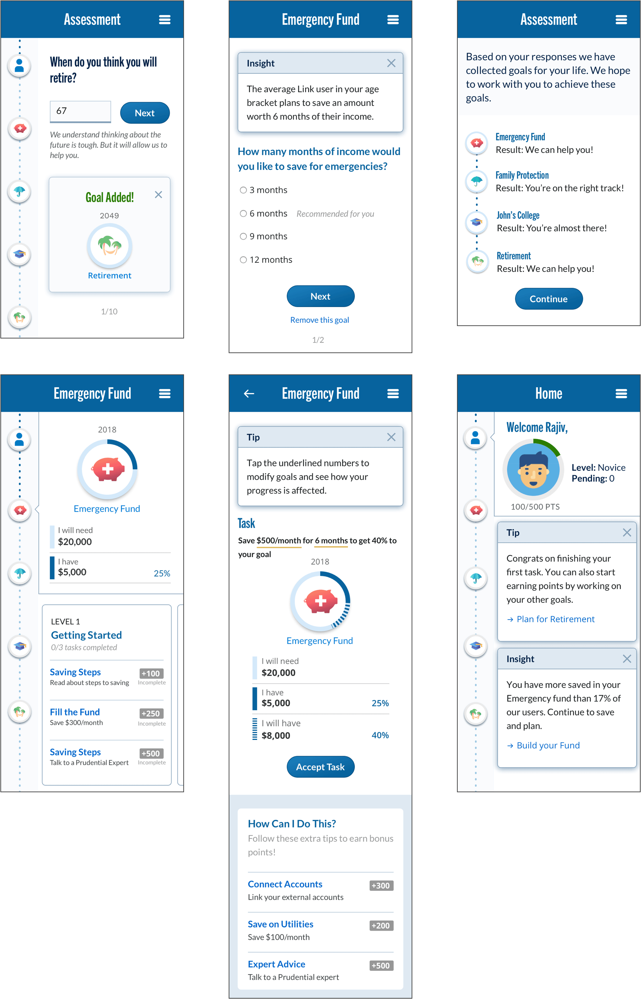
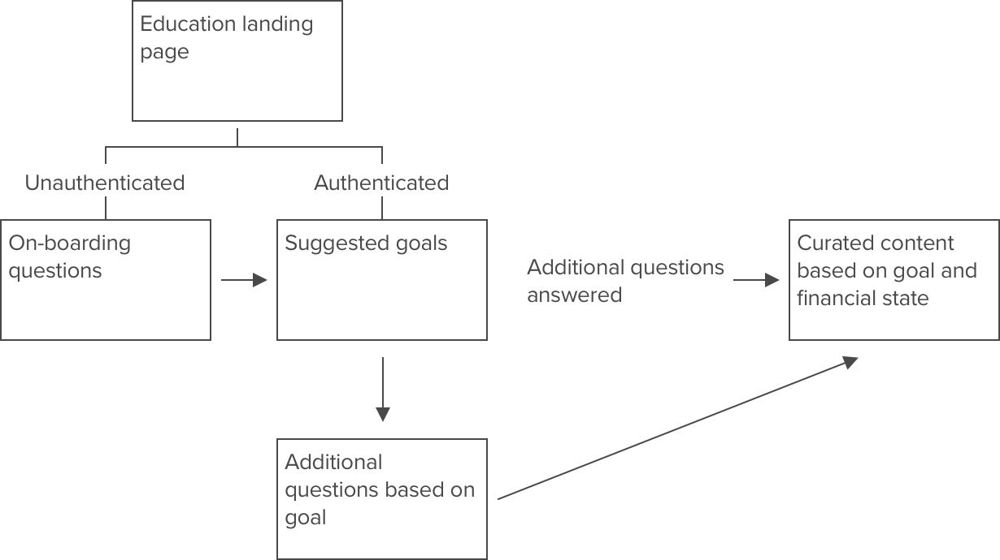
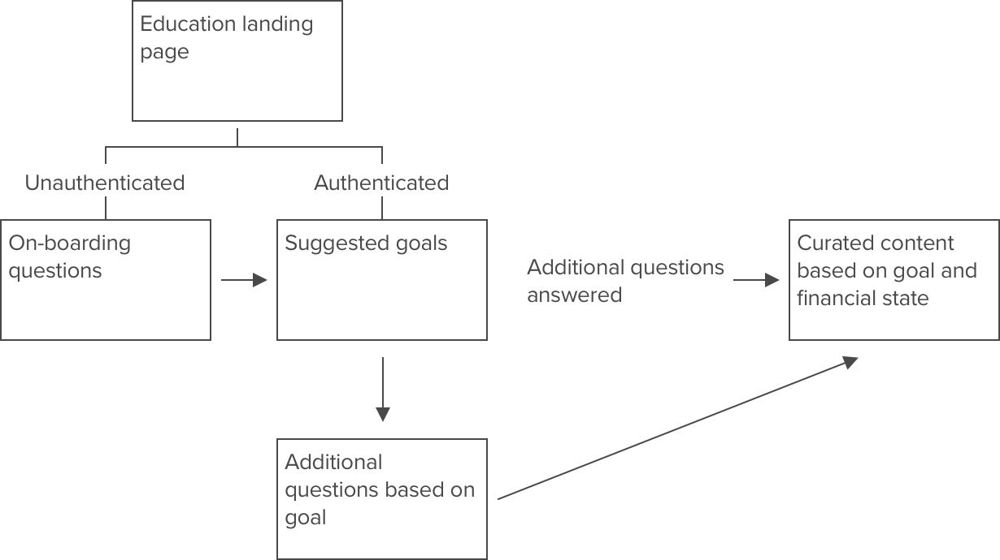
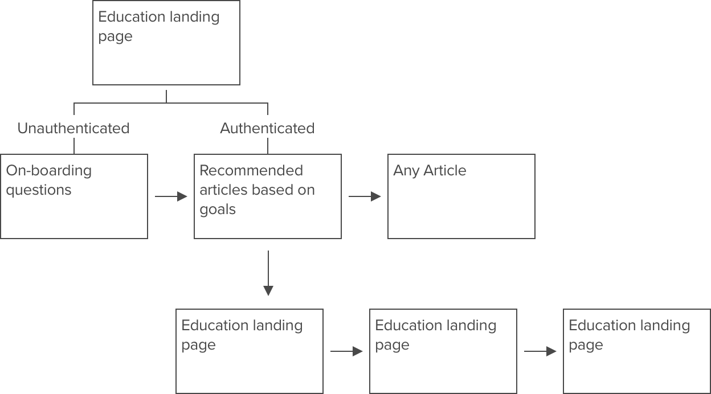
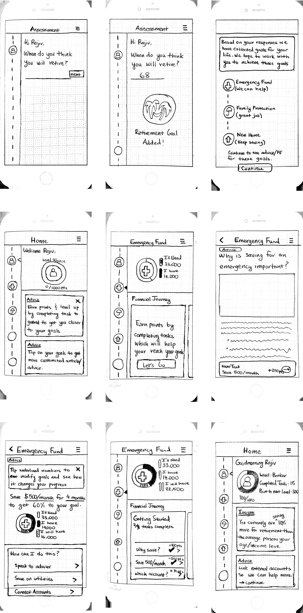
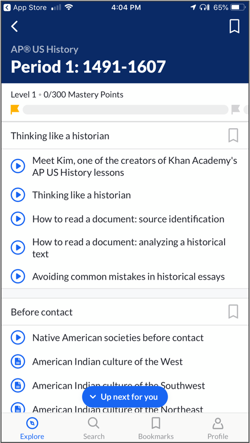
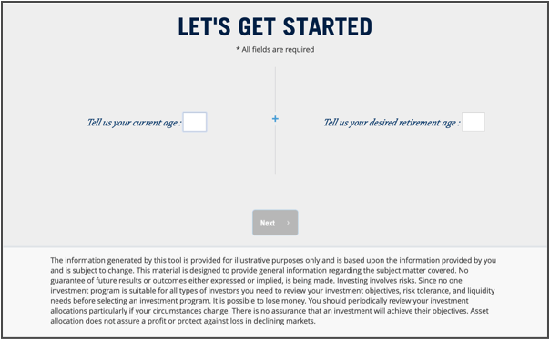
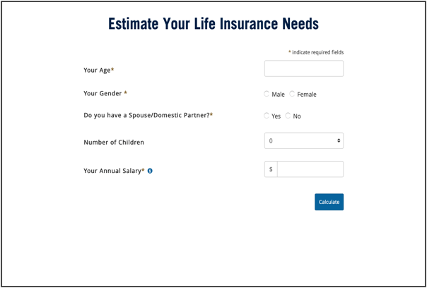
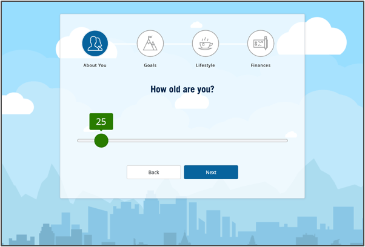
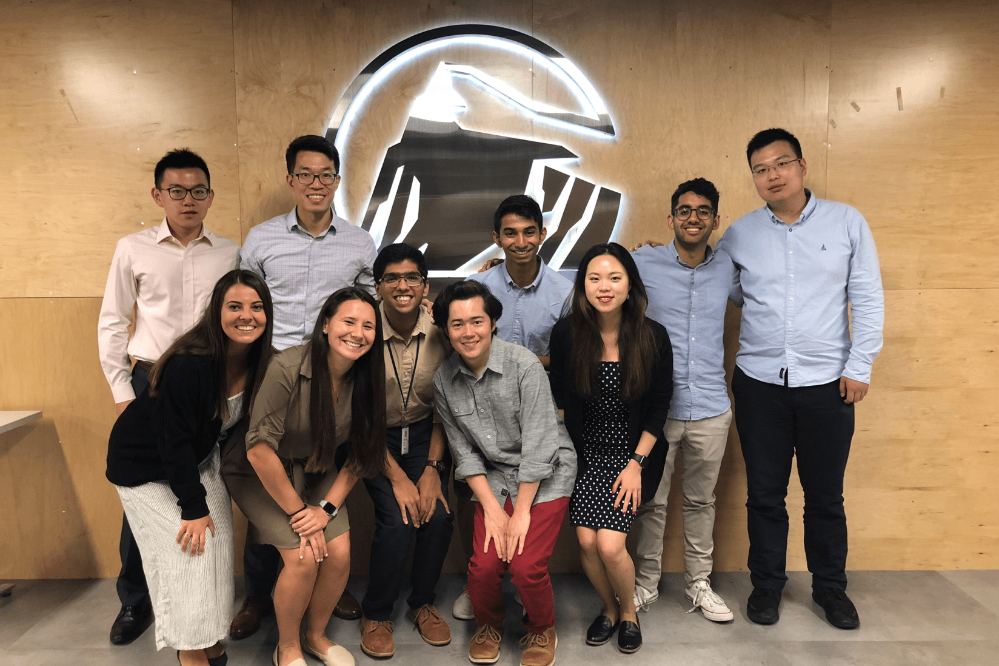

Thank you so much for reading. Now check out some more of my projects. Or don’t and watch some Netflix…

 

Based on this hierarchy, I noticed the on-boarding questions are a significant barrier to entry for the tools section since users were asked the same questions at the start of each tool. Upon following up with the analytics team, I found that less than 15% of users who enter a tool actually finish all of the on-boarding questions.
I also found that of the 14 questions scattered within different tools, each tool contained 6 on-boarding questions that were necessary to realizing user goals.
What is your age?
When do you expect to retire?
How many dependents do you have?
What are their ages?
What is your family income?
How much do you spend monthly?
How much debt do you have?
Thus, instead of waiting for users to find the tools and then fill out additional questions, Prudential could generate suggested goals for both new and existing users based on their responses to these on-boarding questions. With suggested goals, users would not have to scroll through articles and tools to find resources applicable to them. These goals could be immediately presented to users and, if the customer considered one as applicable, they could then fill out additional questions.

I also found that of the 14 questions scattered within different tools, each tool contained 6 on-boarding questions that were necessary to realizing user goals.
What is your age?
When do you expect to retire?
How many dependents do you have?
What are their ages?
What is your family income?
How much do you spend monthly?
How much debt do you have?
Thus, instead of waiting for users to find the tools and then fill out additional questions, Prudential could generate suggested goals for both new and existing users based on their responses to these on-boarding questions. With suggested goals, users would not have to scroll through articles and tools to find resources applicable to them. These goals could be immediately presented to users and, if the customer considered one as applicable, they could then fill out additional questions.
Prior to prototyping, I decided to audit the information architecture of the education page and the questions within each tool. Here are the common categories:
• Goals: Financial areas that Prudential has identified as important to customers. This includes saving for retirement, emergency funds, college savings, etc.
• On-boarding questions: Group of demographic-type questions. This includes name, age, desired retirement age, income, etc.
• Goals: Financial areas that Prudential has identified as important to customers. This includes saving for retirement, emergency funds, college savings, etc.
• On-boarding questions: Group of demographic-type questions. This includes name, age, desired retirement age, income, etc.
Information Architecture
• Introducing gamification led to 60% of testers saying that they would return to use the platform and check on their points
• Based on observations all testers knew where exactly to start and did not get confused by the articles page
• Testers mentioned in the debrief survey that they did not feel like the platform was trying to sell them a product and rather was offering helpful services if necessary
• Based on observations all testers knew where exactly to start and did not get confused by the articles page
• Testers mentioned in the debrief survey that they did not feel like the platform was trying to sell them a product and rather was offering helpful services if necessary
The paper prototyping process truly helped me work through many usability issues and learn about how users navigated through my prototypes. I was able to conduct multiple usability studies in the Prudential UX research lab and acted as the computer (my colleague Logan, UX Researcher, was the moderator). Through these studies, I found many interesting insights that I applied to future prototypes.

From this stage we began to paper prototype different ideations of our solution. Inspired by solutions like Khan Academy, my team and I built a financial education platform that started by conducting a short assessment on users to understand their goals (as mentioned earlier, I reduced the on-boarding assessment to 6 questions from 14). Based on user responses, the platform suggests applicable goals.
Paper Prototyping
Ideation
• Education packs make it easy for user to understand what task they are trying to solve
• Displayed time limits give users a clear understanding of how long each task will take
• Easy to switch between different goals
• Just like Khan Academy, packs make it easy to understand where to start despite the large amount of content available
• Displayed time limits give users a clear understanding of how long each task will take
• Easy to switch between different goals
• Just like Khan Academy, packs make it easy to understand where to start despite the large amount of content available
Headspace
• Easy to understand where to start and where to go next
⁃ Progress noted by icons so that users do not repeat exercises
• Icons make it simple to differentiate between a video and an article
• CTA “Up next for you” prompts user to scroll down and feels personal
• Gamification engages user and might encourage them to return to the application

⁃ Progress noted by icons so that users do not repeat exercises
• Icons make it simple to differentiate between a video and an article
• CTA “Up next for you” prompts user to scroll down and feels personal
• Gamification engages user and might encourage them to return to the application
Khan Academy
Inspiration
The tools in the education experience offer users the ability to learn more about their financial status in regards to specific goals. Below are some of the key issues with the current experience.
• Design inconsistencies across all tools that do not meet playbook standards
• Multiple repeated questions across all apps and many similar questions in multiple apps. Users must fill out information for each one
• No central location to find tools. Tools can only be found by scrolling through the education homepage or by finding within articles
• Once a user finishes a tool, products and articles are recommended but there are no concrete follow-up steps



• Design inconsistencies across all tools that do not meet playbook standards
• Multiple repeated questions across all apps and many similar questions in multiple apps. Users must fill out information for each one
• No central location to find tools. Tools can only be found by scrolling through the education homepage or by finding within articles
• Once a user finishes a tool, products and articles are recommended but there are no concrete follow-up steps
3. Improve Tools Experience
As financial education was soon to become an integral part of the prototype, it was important to look at how we could further improve this experience. Based on both the design heuristic of flexibility and user feedback, it was clear that the organization of the tools and articles was not clear to most users. In fact, most users did not know where to begin.
The video to the left shows the content of the education feature, which includes both articles and tools. The content is not easily identifiable until a user reads the summary text, and thus most users did not know Prudential offered financial tools.
The video to the left shows the content of the education feature, which includes both articles and tools. The content is not easily identifiable until a user reads the summary text, and thus most users did not know Prudential offered financial tools.
2. Information Presentation
As mentioned in the research section, the current pipeline does not build a relationship with users due to its impersonal nature. Meanwhile, the education portion of the platform is one of the most positively received components of the platform, as it presents users with helpful information without pushing a product or service. However, the educational component is not a primary component of the platform and is thus not utilized by most users.
Though there are many issues with the current education platform which I will describe later, this tool can be leveraged to build a relationship with Prudential's customers. In addition, Prudential can tailor the products and services offered to a customer based on data gained from the education experience. Overall, adding a modified version of the education experience to the pipeline would increase customer trust and allow Prudential to offer more curated products to its customers.
Though there are many issues with the current education platform which I will describe later, this tool can be leveraged to build a relationship with Prudential's customers. In addition, Prudential can tailor the products and services offered to a customer based on data gained from the education experience. Overall, adding a modified version of the education experience to the pipeline would increase customer trust and allow Prudential to offer more curated products to its customers.
1. Rethink the Pipeline
Design Opportunities
UX Research Statement
In what ways could we build trust with users through financial education in order to help them reach their financial goals and offer them curated Prudential products?
Less than 2% of users interacted with any of the tools or articles (this number further decreased for any article not found on the front page)
Based on satisfaction surveys, more than 70% of users mentioned the system seemed impersonal and was built to sell them a product rather than educate them on their finances
Less than 10% of users who completed one article/tool utilized a second
More than 80% of responses to articles were positive, indicated by users’ feedback that the articles were ‘helpful’ and ‘easy to read’. However, follow-up research determined that the vast amount of articles led users to not know where to start and give up
Based on this data it is evident that the current Prudential pipeline of learning about users and offering a solution is not an acceptable approach. I presented this data to the UX team and we asked ourselves this question:
Key Findings
The first step of the design process involved working with the Data Analytics team to analyze how users currently use and view Prudentials financial tools. This was a satisfying process in that I finally used many of the skills I learned in statistics and design research courses in a real-world setting. The current Prudential financial education platform consists of a patchwork of articles and tools. The articles include educational content about users' finances and goals. The tools provide users with insights about their current financial status based on their specific goals (retirement, investments, life-insurance, etc.). Based on their responses, the tools then offer users specialized services. These tools also help Prudential identify which goals are important to their customers.
Research
Problem Statement
Help users plan their family finances and build trust in Prudential's brand in order to increase customer retention and offer curated solutions to help meet their goals.
Prudential offers various financial work place solutions including retirement plans, annuities, and investment accounts. This summer I worked as a UX summer associate in the Prudential Customer Office. This branch of Prudential is fairly new and is tasked with reimagining how Prudential interacts with both its existing and future customers. The design team works in a Pod-based system in which designers are paired with certain projects and initiatives. I worked on a team focused on creating new solutions to increase customer engagement and create trust in Prudential's brand and products.
Background

User Experience Intern
Prudential